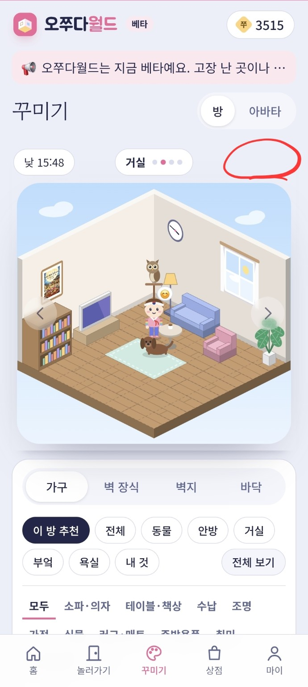
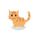
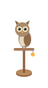
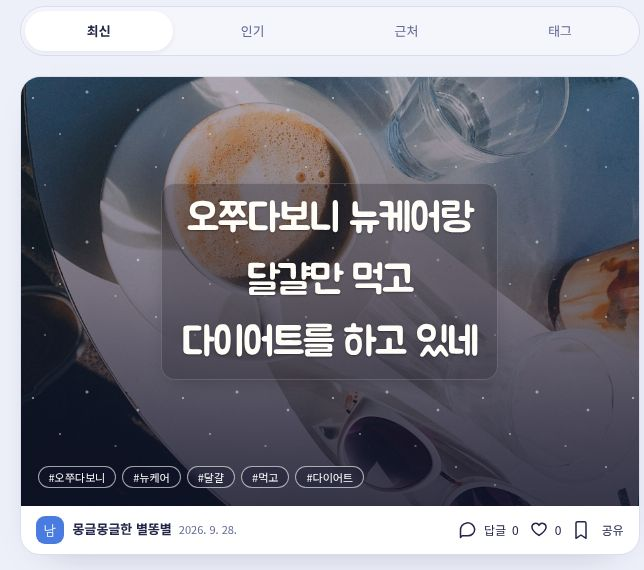

미니홈피 · 오쭈다월드
좋아하는 걸로
가득한 내 방.

월드 속 나의 펫
밥 주고,
쓰담쓰담.
돌보고, 친해지고, 이야기도 나눠요.
눌러서 미리 놀아보기
어떻게 놀아줄까요?


어떤 친구를 만날까요?익명카드 · 오쭈다노트
오늘 있었던 일,
한 장에 쏙.
이름 없이 편하게 마음을 나눠요.

미니홈피 · 오쭈다월드

월드 속 나의 펫
돌보고, 친해지고, 이야기도 나눠요.
어떻게 놀아줄까요?


어떤 친구를 만날까요?익명카드 · 오쭈다노트
이름 없이 편하게 마음을 나눠요.

하나씩, 가볍게 시작해요
나를 표현하는 방법을, 그날의 기분에 맞춰 골라요.
오쭈다는 나만의 공간을 가꾸는 즐거움과 짧은 이야기를 나누는 즐거움을 함께 담았어요. 취향을 차곡차곡 쌓고 싶을 때는 월드로, 지금 떠오른 마음을 가볍게 꺼내고 싶을 때는 노트로 가면 돼요.
방과 아바타를 꾸미고 다이어리·앨범에 일상을 남겨요. 친구의 방에 놀러 가거나, 공용 장소에서 채팅하고 게임도 즐길 수 있어요.
200자 안의 글과 사진을 카드로 남겨요. 익명 또는 월드 닉네임을 선택하고, 근처 이야기와 태그를 찾아보며 답글 카드로 대화를 이어 가요.
두 서비스를 따로 가입할 필요가 없어요. 계정과 쭈를 함께 사용하고, 알림과 문의도 이어져요. 각 서비스의 마이에서 다른 공간으로 이동할 수 있어요.
계정 하나를 만들고, 먼저 가 보고 싶은 공간을 고르세요.
첫 화면 → 회원가입 / 로그인
비밀번호를 잊었다면 로그인 화면의 비밀번호를 잊었어요를 이용해요. 가입한 이메일을 입력하고, 수신한 안내와 화면의 절차에 따라 비밀번호를 다시 설정하세요.
오쭈다 첫 화면으로월드 → 마이 → 프로필 / 화면 설정
닉네임과 소개글, 기분 이모지와 짧은 기분 글을 적을 수 있어요. 내용을 바꾼 뒤 프로필 저장을 눌러 주세요. 닉네임은 12자, 소개글은 40자까지 쓸 수 있어요.
테마는 분홍·민트·하늘·레몬·라일락 계열 중에서 고르고, 밝은 화면과 어두운 화면을 선택할 수 있어요. 테마는 화면 분위기를 바꾸는 설정이고, 방의 벽지·가구는 꾸미기에서 따로 바꿔요.
작은 물건 하나부터, 나다운 분위기를 만들어 가요.
월드 → 꾸미기 → 방
목록이 좁게 보이면 전체 보기를 눌러 더 많은 항목을 살펴보세요. 안방·거실 같은 방별 분류와 동물·수납·조명 같은 종류별 분류도 활용할 수 있어요.
아직 소유하지 않은 유료 상품은 미리보기 상태로 확인할 수 있어요. 미리 보이는 것과 구매 완료는 달라요. 표시된 가격과 구매 버튼을 확인하고 결정해 주세요.
원하지 않으면 그만 보기로 미리보기를 끝내면 돼요. 이미 소유한 상품은 ‘내 것’에서 다시 찾아 쓸 수 있어요. 세트 상품을 적용한 뒤 되돌리기 메뉴가 표시되면 원래대로로 이전 배치를 복원할 수 있어요.
상점과 쭈 사용법 확인하기월드 → 꾸미기 → 아바타
얼굴, 머리, 옷, 신발, 소품을 차례로 살펴보세요. 피부와 머리색, 머리 모양, 상·하의 색과 장식 등을 조합해 내 모습을 만들 수 있어요. 어떤 모습이 어울릴지 모르겠다면 랜덤을 눌러 아이디어를 얻어 보세요.
선택한 항목에 가격이 있다면 보유 여부와 구매 안내를 확인해 주세요. 방 꾸미기와 마찬가지로 유료 상품의 미리보기만으로 구매가 완료되는 것은 아니에요.
월드 → 꾸미기 → 방 → 방 화면 위 오른쪽
방 화면 위의 방문 닫기를 누르면 다른 사람의 방문을 막을 수 있어요. 문을 닫은 동안에는 친구도 내 방과 그 안의 게시물을 볼 수 없어요. 나는 계속 내 공간을 이용할 수 있어요.
다시 열고 싶을 때 같은 자리의 방문 열기를 누르세요. 이 버튼은 마이가 아닌 꾸미기에 있어요.
글, 사진, 방명록으로 미니홈피에 일상을 쌓아요.
월드 → 홈 → 다이어리
마이에서 다이어리의 기본 공개 범위를 정해 두면 다음 글을 쓸 때 편해요. 기본값을 바꾸는 것만으로 이미 작성한 모든 글의 공개 범위가 바뀌지는 않아요.
월드 → 홈 → 앨범
앨범에서는 사진과 영상을 올리고 전체·사진·영상으로 나누어 볼 수 있어요. 영상은 현재 1분 이내, 50MB 이하인 파일을 사용해 주세요. 사진은 크게 열어 보고 설명을 남길 수 있어요.
월드 → 내 방 또는 친구의 방 → 방명록
친구의 방을 구경한 뒤 방명록에 인사를 남겨 보세요. 글은 500자까지 쓸 수 있고, 비밀글을 선택하면 일반 이용자 중에서는 작성자와 방 주인만 내용을 볼 수 있어요.
방 주인은 받은 글에 답글을 남기거나 답글을 수정하고, 원하지 않는 글을 숨길 수 있어요. 숨긴 글은 주인에게 표시되는 숨긴 글 보기에서 확인해요. 작성자는 자신의 글을 삭제할 수 있고, 문제가 있는 글은 신고할 수 있어요.
“새로 바꾼 거실 조명이 예쁘다! 나도 다음에는 식물을 놓아 봐야겠어.”
서로의 방에 들르고, 함께 있는 장소에서 이야기해요.
월드 → 놀러가기 → 친구 찾기
친구가 문 닫힘 상태라면 방문할 수 없어요. 친구 신청 수락이 닫힌 문이나 비공개 게시물을 여는 권한을 뜻하지는 않아요.
순간이동는 방문 가능한 다른 사람의 방을 만나 보는 기능이에요. 새로운 인테리어를 구경하고 마음에 드는 방에 인사를 남겨 보세요. 방문만으로 자동으로 친구가 되지는 않아요.
예시 방 구경하기는 사용 방법과 분위기를 살펴보는 체험이에요. 예시로 제공되는 방이나 가상 친구를 실제 이용자로 혼동하지 않도록 구분해 주세요.
월드 → 놀러가기 → 공용 장소
원하는 장소를 고르고 들어가 보세요. 같은 장소에 있는 사람들과 짧은 말을 주고받거나 이모지로 반응할 수 있어요. 채팅 입력은 60자까지 가능해요.
장소 채팅은 그 장소의 이용자들이 함께 보는 대화예요. 특정 친구에게만 보내는 개인 메시지로 생각하지 말고, 공개적으로 나누어도 괜찮은 이야기를 적어 주세요.
불편한 이용자가 있다면 닉네임을 눌러 표시되는 신고·차단 메뉴를 확인할 수 있어요. 도서관에서는 퀴즈를, 오락실에서는 여러 게임을 찾아볼 수 있어요.
짧게 한 판, 친구와 한 판. 취향에 맞게 즐겨요.
월드 → 놀러가기 → 왔네 오락실
| 게임 | 기본 사용법 | 알아 두면 좋아요 |
|---|---|---|
| 두더지 잡기 | 30초 동안 나타나는 두더지를 눌러요. | 황금 두더지는 3점, 폭탄은 2점 감점이에요. |
| 쭈 달리기 | 화면을 눌러 장애물을 뛰어넘어요. 두 번 뛰기도 활용해요. | 달리면서 얻는 동전 점수와 계정의 쭈 잔액은 달라요. |
| 탑 쌓기 | 움직이는 블록이 아래 블록과 맞을 때 눌러 멈춰요. | 겹친 부분이 남으니, 차분하게 중앙을 맞춰 보세요. |
| 벽돌깨기 | 막대를 좌우로 움직여 공을 받아 벽돌을 깨요. | 공을 놓치지 않도록 다음에 떨어질 위치를 살펴보세요. |
| 뱀게임 | 화면을 밀거나 방향 버튼으로 뱀을 움직여요. | 벽이나 자기 몸에 부딪히지 않도록 길을 확보해요. |
| 나사 풀기 | 물체를 돌려 보이는 나사를 누르고 같은 색을 모아요. | 같은 색 3개를 상자에 채워요. 보관칸이 막히지 않도록 순서를 생각해요. |
보이지 않는 나사는 물체를 돌려 찾고, 블록을 길게 눌러 가려진 부분을 살펴보세요. 색깔별로 필요한 나사와 남은 보관칸을 먼저 확인하면 다음 순서를 정하기 쉬워요.
선택형 도움 기능인 상자 +1은 10쭈, 보관칸 +1은 3쭈예요. 구매한 추가 공간은 현재 단계에서만 적용되므로 다음 단계까지 계속 유지되는 상품으로 생각하지 않도록 해 주세요.
게임 화면에서 제공하는 컴퓨터와 하기, 한 기기에서 둘이 하기, 온라인 친구와 하기 중 원하는 방식을 선택해요. 이용 가능한 방식은 선택한 게임 화면에서 확인할 수 있어요.
월드 → 놀러가기 → 여기 도서관
도서관의 퀴즈 안내를 보고 답을 입력해요. 현재는 주기적으로 문제가 바뀌고, 문제마다 시도 횟수가 정해져 있어요. 정답과 보상 여부는 화면의 결과 안내를 확인해 주세요.
퀴즈는 도서관에서 즐기는 별도 활동이에요. 게임을 하기 위해 반드시 먼저 통과해야 하는 절차는 아니에요.
이름을 불러 주고, 돌보고, 오늘의 이야기를 나누는 작은 친구.
이름을 불러 주고, 돌보고, 오늘의 이야기를 나눠요.
월드의 펫은 방에 놓고 바라보기만 하는 장식이 아니에요. 이름을 지어 주고, 밥을 주고, 쓰다듬고, 함께 놀면서 친밀도를 쌓는 친구예요. 배부름과 기분에 따라 상태가 달라지고, 돌볼 때마다 펫과 내 아바타가 함께 움직이는 모습도 볼 수 있어요.
펫과 대화에서는 오늘 있었던 일이나 기분을 말할 수 있어요. 이름을 불러 보거나 “이리 와”, “앉아”처럼 말을 걸어 보세요. 동물의 종류와 말의 내용에 따라 다른 말과 동작으로 반응해요.
밥과 놀이로 상태를 챙기고 친밀도를 올려요. 처음 만난 사이에서 친구, 단짝, 가족을 거쳐 더 가까운 관계로 성장해요.
“오늘 좋은 일이 있었어”, “조금 피곤해”처럼 가볍게 말을 걸어요. 알려 준 이름이나 취향을 같은 브라우저에서 기억해 대화에 활용할 수 있어요.
월드 → 상점 / 꾸미기 → 동물 → 홈에서 펫 누르기
강아지와 고양이뿐 아니라 새, 파충류, 곤충, 십이지 동물도 있어요. 아래는 현재 마련된 종류의 예시예요. 실제 판매·보유 여부와 배치 가능한 방은 상점과 꾸미기 화면에서 확인하세요.
| 종류 | 만날 수 있는 친구 예시 | 돌보기 메뉴 |
|---|---|---|
| 강아지 | 슈나우저, 진돗개, 닥스훈트, 포메라니안, 푸들, 시바견, 웰시코기, 말티즈, 골든리트리버, 허스키, 비숑, 비글 | 밥 주기 · 쓰다듬기 · 놀아주기 |
| 고양이 | 치즈냥이, 고등어냥이, 턱시도냥이, 삼색이, 러시안블루, 샴, 페르시안, 스코티시폴드, 먼치킨, 노르웨이숲, 랙돌, 까만 고양이 | 밥 주기 · 쓰다듬기 · 놀아주기 |
| 새 | 사랑앵무, 왕관앵무, 코카투, 금강앵무, 독수리, 부엉이, 참새, 까치 | 모이 주기 · 쓰다듬기 · 노래 불러주기 |
| 파충류 | 레오파드게코, 크레스티드게코, 비어디드래곤, 이구아나, 카멜레온, 거북이, 볼파이톤 | 먹이 주기 · 관찰하기 · 일광욕 시키기 |
| 곤충 | 장수풍뎅이, 사슴벌레, 무당벌레, 사마귀, 나비, 개미집, 반딧불이 | 젤리 주기 · 관찰하기 · 톡톡 인사하기 |
| 기본·십이지 동물 | 강아지, 고양이, 토끼와 쥐·소·호랑이·용·뱀·말·양·원숭이·닭·돼지 등 | 밥 주기 · 쓰다듬기 · 놀아주기 |
같은 종류도 각 펫에게 다른 이름을 지어 줄 수 있어요. 현재는 같은 종류의 동물을 한 방에 2마리까지 놓을 수 있고, 방의 전체 배치 개수 제한도 함께 적용돼요.
월드 → 홈 → 내 펫 → 돌보기
배부름은 얼마나 든든한지, 기분은 얼마나 즐거운지를 보여 줘요. 두 값은 시간이 지나면 조금씩 줄어들어요. 상태는 ‘배고파요’, ‘심심해요’, ‘행복해요’, ‘편안해요’처럼 표시돼요.
| 행동 | 변화 | 사용 조건 |
|---|---|---|
| 밥·모이·먹이·젤리 주기 | 배부름 +35 친밀도 +3 | 펫 한 마리당 하루 최대 3번. 이미 배부름이 95 이상이면 더 먹지 않아요. |
| 쓰다듬기·관찰하기 | 기분 +12 친밀도 +2 | 효과가 다시 오르려면 약 20초 간격이 필요해요. 연달아 눌러도 매번 수치가 오르지는 않아요. |
| 놀아주기·노래·일광욕·인사 | 기분 +20 배부름 −5 친밀도 +4 | 약 1분 쉬었다 다시 할 수 있어요. 배부름이 10 미만이면 먼저 밥이 필요해요. |
먹이 버튼 옆의 0/3, 1/3 같은 숫자는 오늘 먹인 횟수예요. 배가 부르거나 잠깐 쉬고 싶다는 말이 나오면 버튼 고장으로 생각하지 않아도 돼요. 현재 상태와 남은 횟수를 먼저 확인하세요.
홈에서 펫 누르기 → 배부름·기분 확인 → 필요하면 밥 주기 → 쓰다듬거나 놀아주기 → 대화 탭에서 오늘의 인사 남기기
돌보기와 대화를 통해 쌓은 친밀도에 따라 단계가 올라가요. 펫 창의 막대와 다음까지 숫자로 다음 단계까지 얼마나 남았는지 볼 수 있어요. 이 숫자는 쭈 잔액이나 구매 비용이 아니에요.
| 단계 | 관계 | 누적 친밀도 |
|---|---|---|
| Lv.1 | 처음 만난 사이 | 0부터 |
| Lv.2 | 친구 | 20부터 |
| Lv.3 | 단짝 | 50부터 |
| Lv.4 | 가족 | 100부터 |
| Lv.5 | 소울메이트 | 180부터 |
| Lv.6 | 영원한 짝꿍 | 300부터 · 최고 단계 |
대화는 현재 펫마다 하루 첫 5번의 응답에 친밀도 1씩 더해져요. 그 뒤에도 계속 이야기할 수 있지만, 대화할 때마다 친밀도가 끝없이 오르지는 않아요.
배부름과 기분이 내려가는 것과 친밀도 단계는 달라요. 현재 시간 경과로 줄어드는 것은 배부름과 기분이며, 누적 친밀도를 같은 속도로 깎는 방식은 아니에요.
월드 → 홈 → 내 펫 → 대화
| 이렇게 말해 보세요 | 함께 해 볼 일 |
|---|---|
| “구름아, 이리 와” “구름아, 앉아” | 직접 지은 펫 이름을 불러 반응과 동작을 살펴봐요. |
| “오늘 정말 신났어” “오늘은 조금 피곤해” | 지금의 기분과 짧은 일상을 나눠요. |
| “내 이름은 민준이야” “딸기 좋아해” | 나에 대해 알려 주고, 나중에 “내 이름 뭐야?”, “내가 뭘 좋아하지?”라고 물어봐요. |
| “생일은 4월 17일” | 생일을 기억해 두면 그날 대화할 때 축하에 활용할 수 있어요. 별도 예약 알림을 보내는 기능은 아니에요. |
답변은 준비된 대화와 말의 내용에 따른 반응으로 구성돼요. 모든 문장을 정확히 이해하거나 실제 사람처럼 판단하는 것은 아니에요. 잘 맞지 않는 답이 나오면 짧고 분명한 문장으로 다시 말해 보세요. 마음을 가볍게 나누는 기능으로 사용해 주세요.
대화 입력칸 옆 마이크를 누르고 브라우저의 마이크 권한을 허용하면 한국어 음성을 글로 바꿔요. 현재는 말을 마치면 인식된 내용을 자동으로 보내고 펫의 답장을 표시해요. 마이크를 다시 누르면 입력을 멈출 수 있어요.
음성 입력 지원 여부는 기기와 브라우저에 따라 달라요. 버튼이 없거나 인식이 잘되지 않으면 글로 입력하거나 휴대전화 키보드의 음성 입력을 사용할 수 있어요.
펫과 나눈 대화와 대화 중 기억한 정보는 현재 브라우저에 저장돼요. 펫 대화 내용을 오쭈다 운영 서버로 보내지 않으므로, 다른 회원이나 운영자가 서비스 관리 화면에서 읽는 방식이 아니에요. 음성 입력을 쓰는 경우에는 앞의 음성 인식 안내가 별도로 적용돼요.
같은 계정으로 로그인해도 다른 기기·다른 브라우저에 대화가 자동으로 이어지지는 않아요. 브라우저 데이터를 지우면 대화와 기억도 사라질 수 있어요. 현재 대화 목록에는 펫별 최근 60개 메시지를 보관하므로 전체 대화의 영구 기록으로 사용하지는 마세요.
펫의 이름·친밀도와 대화 기록은 서로 다른 자료예요. ‘대화 지우기’는 펫을 방에서 없애거나 친밀도를 초기화하는 버튼이 아니에요.
꾸미기에서 내 펫을 선택해 빼기를 누르면 방에서 잠시 쉬게 할 수 있어요. 돌보던 펫은 같은 종류를 다시 놓을 때 이름과 친밀도를 이어서 불러오는 기능이 있어요. 다시 배치한 뒤 이름과 상태를 확인하세요.
다시 놓을 때는 새 배치로 연결되므로, 예전 대화 목록까지 함께 복원되는 것은 아니에요. 대화 기록은 기기에 저장되는 별도 자료라는 점을 기억해 주세요.
친구의 방에서 펫을 누르면 인사 반응을 볼 수 있어요. 다른 사람의 펫 이름을 바꾸거나 내 펫처럼 돌보기·개인 대화 기록을 여는 기능은 제공하지 않아요.
“잘 지냈어?” 하고 인사하기 → 상태에 맞춰 한 번 돌보기 → 오늘 있었던 일 한 문장 나누기. 친밀도 숫자를 빨리 채우기보다 편한 속도로 함께해 보세요.
오늘 떠오른 마음을, 200자 안에 가볍게 남겨요.
노트 → 카드
| 보기 방식 | 이럴 때 사용해요 |
|---|---|
| 최신 | 방금 올라온 이야기부터 차례로 보고 싶을 때 |
| 인기 | 최근 다른 이용자들이 관심을 보인 이야기를 찾을 때 |
| 근처 | 내 현재 위치 주변의 이야기를 만나고 싶을 때 |
| 태그 | 관심 있는 낱말이나 주제로 카드를 모아 보고 싶을 때 |
카드를 누르면 자세한 내용과 답글을 볼 수 있어요. 마음에 드는 글에는 공감하고, 나중에 다시 보고 싶다면 저장해 두세요. 카드의 공유 기능으로 링크를 나눌 수도 있어요.
노트 → 카드 / 메모함 → +
카드 작성 화면에서 사진 선택 버튼을 눌러 기기의 사진을 고르거나 월드 사진첩의 사진을 선택해요. 업로드가 완료됐는지 확인하고 등록해 주세요.
일반 카드에 첨부한 사진은 배경으로 사용하지 않아요. 카드 오른쪽 아래, 태그 위의 동그란 사진으로 표시돼요. 작은 사진을 누르면 크게 볼 수 있어요. 배경으로 보이는 풍경 사진과 내가 첨부한 사진은 서로 다른 요소예요.
첨부 자체는 무료예요. 오른쪽 아래 원형으로 표시하고, 눌러서 크게 봐요. 글 뒤의 배경을 바꾸는 기능이 아니에요.
행사나 광고를 보여 주는 사진을 카드 배경으로 사용해요. 사진 첨부 비용이 아니라 이벤트의 반경·시간에 따라 등록 비용을 계산해요.
| 카드 상태 | 사진 사용 방법 |
|---|---|
| 아직 등록하지 않은 새 카드 | 사진을 첨부할 수 있어요. 등록 전에 선택을 확인하세요. |
| 처음부터 사진이 있던 카드 | 수정 화면에서 다른 사진으로 바꿀 수 있어요. 사진 교체 자체는 무료예요. |
| 사진 없이 만든 기존 카드 | 수정으로 사진을 새로 추가할 수 없어요. 사진을 담고 싶다면 새 카드 작성 때 첨부해 주세요. |
글만 수정할 때는 기존 사진이 유지돼요. 사진을 교체했다면 업로드와 저장의 완료 메시지를 확인하고, 수정한 카드에서 실제 사진을 열어 보세요. 실패 안내가 나왔다면 새 사진으로 바뀌었다고 생각하지 말고 다시 확인해 주세요.
태그 입력칸에 낱말을 쓰고 쉼표로 구분하세요. 태그는 최대 5개, 한 태그당 20자까지 사용할 수 있어요. 직접 넣은 태그를 우선하고, 남은 자리는 글에서 추린 자동 태그로 채워질 수 있어요.
등록 전에 글의 뜻과 맞는지 확인해 주세요. 불필요한 자동 태그는 지울 수 있어요. 표시 공간이 좁으면 태그의 크기와 배치를 조정해 카드 밖으로 삐져나가지 않도록 보여 줘요.
산책, 오늘의기분, 동네카페
너무 긴 문장보다 다른 사람도 찾을 법한 짧은 낱말이 좋아요. 관심 있는 태그를 누르거나 태그 보기에서 같은 주제의 카드를 찾아보세요.
노트 → 카드 → 근처
현재 근처 보기는 30km 안의 카드를 찾는 방식이에요. 그 범위에 표시할 카드가 없으면 목록이 비어 있을 수 있어요. ‘주변에 카드가 없음’과 ‘위치를 확인하지 못함’은 다른 상태이므로 화면 메시지를 먼저 확인해 주세요.
마음에 드는 카드의 공감 버튼을 누르면 반응을 남길 수 있어요. 더 이야기하고 싶다면 카드를 연 뒤 답글 쓰기를 눌러 답글 카드를 작성하세요. 원래 카드와 답글의 흐름을 따라 대화를 볼 수 있어요.
다시 읽고 싶은 카드는 저장하고, 공유 버튼으로 카드 링크를 나눠 보세요. 공유 방법은 사용하는 기기와 브라우저에 따라 공유 창이나 링크 복사로 나타날 수 있어요.
답글도 카드이므로 작성 길이, 위치 확인, 공개되는 이름을 살펴보고 등록해 주세요. 상위 카드가 삭제되면 연결된 답글을 볼 수 없게 될 수 있으니 보관 기준도 확인해 주세요.
노트 → 메모함 → 저장한 카드 / 내 카드
카드의 저장 버튼으로 모아 둔 목록이에요. 다른 사람의 마음에 드는 글을 다시 찾을 때 사용해요.
현재 로그인한 계정이 작성한 카드를 확인해요. 내 카드를 열고 메뉴에서 수정하거나 삭제할 수 있어요.
‘카드를 불러오지 못했어요’가 보이면 목록이 없다는 뜻으로 단정하지 말고 다시 시도를 눌러 주세요. 로그인한 계정과 인터넷 연결을 확인하고, 계속 실패하면 문의에 오류 문구를 적어 주세요.
로그인한 상태에서 일반 카드를 작성하면 글을 임시로 보관하는 기능을 이용할 수 있어요. 작성 화면의 임시 보관됨 표시를 확인하세요. 연결이 끊겼거나 저장 중인 상태에서는 마지막 입력이 보관되지 않았을 수 있어요.
선택한 사진 파일은 임시 보관되지 않아요. 작성 화면을 닫았다가 다시 이어 쓸 때 사진을 다시 선택해야 해요. 수정 중인 글과 이벤트의 임시 내용은 일반 새 카드와 보관 방식이 다를 수 있으므로, 다른 기기에서도 반드시 이어진다고 생각하지 않도록 해 주세요.
스마트 글래스 미리보기에서는 내 위치로 보기 또는 예시 화면으로 카드가 보이는 방식을 살펴볼 수 있어요. 이전·다음 버튼으로 넘기고, 키보드 방향키와 Enter도 사용할 수 있어요.
알리고 싶은 소식을, 원하는 지역과 시간에 보여 주세요.
가게 소식, 행사 안내처럼 특정 지역에 알리고 싶은 내용을 이벤트 카드로 등록할 수 있어요. 일반 카드와 구분되도록 왼쪽 위에 ‘이벤트/광고’ 표시가 붙어요.
선택한 중심 위치와 반경, 운영 시간에 맞는 이용자에게 표시돼요. 전국의 모든 이용자에게 계속 노출되는 상품은 아니에요. 첨부한 광고 사진은 이벤트 카드의 배경으로 보여요.
노트 → 마이 → 내 이벤트 → 이벤트 만들기
100쭈 × 반경(km) × 시간
| 설정 예시 | 계산 | 필요한 쭈 |
|---|---|---|
| 반경 1km · 1시간 | 100 × 1 × 1 | 100쭈 |
| 반경 2km · 3시간 | 100 × 2 × 3 | 600쭈 |
| 반경 5km · 2시간 | 100 × 5 × 2 | 1,000쭈 |
이 금액은 이벤트 운영 범위와 시간에 대한 비용이에요. 사진 파일을 첨부했다는 이유로 별도 10쭈가 추가되는 방식은 아니에요. 최종 등록 화면에 표시된 조건과 금액을 기준으로 확인하세요.
내 이벤트에서 작성한 이벤트를 확인하고, 운영 중인 이벤트의 글·태그·꾸미기·사진을 수정할 수 있어요. 반면 이미 등록한 중심 위치, 반경, 운영 시간은 수정으로 바꿀 수 없어요.
운영 시간이 끝난 이벤트는 더 이상 진행 중인 광고로 노출되지 않으며 수정도 제한돼요. 삭제는 내 이벤트 메뉴에서 진행할 수 있어요. 운영 종료와 서비스의 게시물 보관 기한은 별개의 기준이에요.
무료로 쓰는 기능과 쭈가 필요한 선택을 알아 두세요.
상단 쭈 잔액 / 월드 → 상점
쭈는 꾸미기 상품, 카드의 일부 선택 기능, 이벤트 등에 사용하는 서비스 안의 재화예요. 같은 계정이라면 월드와 노트에서 잔액을 함께 사용해요. 어느 쪽에서 사용해도 같은 잔액에 반영돼요.
| 기능 | 현재 비용 | 확인할 점 |
|---|---|---|
| 기본 카드·답글 작성 | 무료 | 유료 배경 선택 등 별도 옵션 제외 |
| 일반 카드 사진 첨부·교체 | 무료 | 기존 카드의 사진 추가 제한은 별도로 적용 |
| 공감·메모함 저장·카드 탐색 | 무료 | 저장과 영구보관은 달라요 |
| 기본 배경 무작위 | 무료 | 등록할 때 제공 배경이 정해져요 |
| 제공 배경 직접 선택 | 10쭈 | 같은 배경은 구매 후 1개월간 여러 카드에서 재사용, 자동 연장 없음 |
| 카드 영구보관 | 10쭈 | 가능한 카드에 한해 자동 보관 기한 만료를 막아요 |
| 이벤트 등록 | 100 × km × 시간 | 최종 반경과 시간, 총액 확인 |
| 상점 꾸미기 상품 | 상품별 표시 | 보유 여부와 실제 구매 금액 확인 |
| 나사 풀기 도움 기능 | 상자 10쭈 / 칸 3쭈 | 현재 단계에서만 적용 |
내 사진을 카드에 첨부하는 것은 무료예요. 제공되는 배경 사진 중 하나를 직접 지정하는 옵션이 10쭈예요. 사진을 올린 뒤 잔액이 10쭈 줄었다면 배경 선택 옵션도 함께 골랐는지 확인해 보세요.
내 사진 첨부 + 기본 사진 무작위 · 무료 선택 → 등록하기
제공 배경을 한 번 구매하면 구매일로부터 1개월 동안 같은 배경을 여러 카드에서 추가 차감 없이 사용할 수 있어요. 자동으로 연장하지 않아요. 배경 적용 기간, 일반 카드의 보관 기한, 내가 첨부한 사진의 표시 위치는 서로 다른 개념이에요.
선택한 옵션과 실제 차감이 맞지 않는다면 등록한 카드와 발생 시간을 적어 문의해 주세요. 내역을 확인하지 않고 사진 첨부 비용이라고 단정하지 않아도 돼요.
월드 → 상점
세트, 가구, 동물, 소품, 벽지, 타일, 바닥 등의 분류에서 상품을 찾아보세요. 물건의 모습과 가격, 보유 상태를 확인하고 구매해요. 세트 구매 시에는 이미 보유한 항목을 반영한 실제 결제 금액을 살펴보세요.
구매한 물건은 꾸미기의 내 것에서 찾아 배치해요. 선물 메뉴가 있는 상품은 받는 사람과 표시된 조건을 확인한 뒤 선물할 수 있어요.
누구에게 보이는지, 언제까지 남는지 함께 확인하세요.
| 설정 | 의미 |
|---|---|
| 노트의 익명 | 다른 이용자에게 표시할 이름을 익명으로 선택해요. 글이 계정과 연결되지 않는다는 뜻은 아니에요. |
| 다이어리 공개 범위 | 전체 공개·친구만·나만 보기 중에서 글별로 정해요. |
| 앨범 공개 범위 | 폴더와 자료의 공개 설정을 확인해 누구에게 보여 줄지 정해요. |
| 방명록 비밀글 | 일반 이용자 중 작성자와 방 주인만 볼 수 있게 남겨요. |
| 방문 닫기 | 다른 사람의 내 방 방문을 막아요. 친구에게도 적용돼요. |
| 일반 카드 위치 | 정확한 좌표를 카드에 공개하지 않고, 근처 탐색과 대략적인 거리 안내에 사용해요. |
| 이벤트 위치 | 홍보를 위해 정한 공개 위치와 반경이에요. 일반 카드 위치와 구분하세요. |
신고 처리와 서비스 운영을 위한 정보 처리는 개인정보처리방침에 따라 이뤄져요. 익명이나 비밀글을 운영자까지 절대 확인할 수 없는 방식으로 이해하지 않도록 해 주세요.
개인정보처리방침 읽기일반 카드·답글·이벤트에는 보관 기한이 있어요. 현재 기준으로 작성 후 6개월이 되는 달의 첫날에 만료를 안내하고, 그달 말에 공개를 종료해요. 정확한 일정은 카드에 표시되는 보관 안내와 알림을 확인해 주세요.
영구보관 · 10쭈는 가능한 카드의 자동 보관 기한 만료를 막는 기능이에요. 메모함에 저장하는 기능과 달라요. 사용자가 직접 삭제하거나 계정을 탈퇴한 경우, 운영상 삭제된 경우까지 되돌려 주는 기능은 아니에요.
답글 카드는 연결된 상위 카드들이 모두 보관 상태여야 영구보관할 수 있어요. 상위 카드가 사라지면 대화에 연결된 답글도 영향을 받을 수 있으니, 답글만 따로 안전하게 남는다고 생각하지 않도록 해 주세요.
월드 → 마이 → 계정
다른 기기에서는 같은 이메일의 계정으로 로그인해 서버에 저장된 자료를 확인하세요. 공용 기기를 사용했다면 이용 후 로그아웃해 주세요. 비밀번호는 계정 메뉴에서 변경하거나 로그인 화면의 비밀번호 재설정을 이용할 수 있어요.
회원 탈퇴는 월드와 노트가 함께 사용하는 계정을 정리하는 작업이에요. 게시물·계정 자료·쭈에 영향을 주며 되돌릴 수 없으므로, 마지막 확인 화면을 읽고 진행해 주세요. 단순히 다른 계정으로 들어가려는 경우에는 탈퇴 대신 로그아웃을 이용해요.
두 공간의 소식을 확인하고, 필요한 도움을 요청하세요.
월드 / 노트 → 상단 쭈 옆 종 모양
상단의 종을 눌러 월드와 노트의 알림을 확인해요. 친구·방명록·카드 관련 소식, 문의 답변과 보관 안내 등 도착한 내용을 모아 볼 수 있어요.
알림을 선택해 관련 내용을 열고, 한꺼번에 정리하려면 모두 읽음을 사용하세요. 새 소식이 늦게 보인다면 새로고침으로 다시 불러올 수 있어요. 안 읽은 알림이 남아 있는 동안에는 종의 빨간점이 유지돼요.
월드 마이의 실시간 알림 표시 설정은 방명록·친구 소식 등의 화면 표시를 조절해요. 표시를 껐다고 알림함의 모든 내역을 지우는 것은 아니에요.
월드 / 노트 → 마이 → 문의·의견
월드와 노트는 문의·의견을 통합해서 운영해요. 메뉴에서 문의를 작성하고 답변을 확인할 수 있어요. 문의 내용은 다른 일반 이용자에게 공개되는 게시물이 아니에요.
문의는 2,000자까지 작성할 수 있고, 현재 24시간 동안 최대 3회 보낼 수 있어요. 같은 내용을 여러 번 나누어 보내기보다 필요한 상황을 한 번에 정리해 주세요. 상단의 베타 표시를 통해서도 오류나 개선 의견을 보낼 수 있어요.
문제가 있는 카드·방명록·이용자 메뉴에서 신고를 선택하고 이유와 상황을 적어 보내세요. 신고했다고 즉시 삭제가 확정되는 것은 아니며, 접수된 내용은 운영자가 검토해요.
차단은 원하지 않는 이용자와의 노출·상호작용을 제한하는 기능이에요. 신고가 필요한 내용은 차단과 별도로 신고해 주세요. 차단을 되돌리고 싶다면 차단 관리 화면에서 해당 이용자를 찾아 해제하세요.
사용하다가 막힌 순간, 먼저 확인해 보세요.
내 공간을 꾸미고 긴 기록을 남기려면 월드, 지금 생각을 짧은 카드로 나누려면 노트가 좋아요. 하나의 계정을 쓰므로 한쪽을 골랐다고 다른 쪽을 못 쓰는 것은 아니에요. 두 공간의 차이 보기
아니요. 같은 계정으로 두 공간을 이용해요. 같은 이메일로 로그인하면 되고, 쭈도 함께 사용해요. 다른 이메일로 들어가면 다른 계정의 카드와 잔액이 보일 수 있어요.
기본 카드 작성·사진 첨부·공감·저장 등은 무료예요. 배경 직접 선택, 영구보관, 이벤트, 일부 꾸미기 상품과 게임 도움 기능에는 쭈가 필요해요. 현재는 무료 베타 충전을 제공하지만 조건은 바뀔 수 있어요. 비용표 보기
메모함의 ‘내 카드’를 선택했는지, 작성한 계정으로 로그인했는지 먼저 확인하세요. ‘불러오지 못했어요’라면 오류 상태이므로 다시 시도를 누르고 연결 상태를 확인해 주세요. 계속 실패하면 카드 작성 시각과 오류 문구를 문의로 알려 주세요. 삭제·보관 만료와 일시적인 불러오기 실패는 서로 달라요.
기기의 위치 기능과 브라우저의 사이트 위치 권한을 모두 확인해 주세요. 위치를 확인한 뒤에도 30km 안에 표시할 카드가 없으면 비어 있을 수 있어요. 위치 오류인지 주변 카드 없음인지 메시지를 구분해서 확인하면 좋아요. 위치 설정 순서 보기
일반 카드에는 정확한 좌표를 표시하지 않고 대략적인 거리만 안내해요. 다만 본문이나 사진에 직접 주소를 넣으면 그 내용은 다른 사람이 볼 수 있어요. 이벤트는 공개할 중심 위치를 직접 지정하는 기능이므로 일반 카드와 구분해 주세요.
사진 첨부 자체는 무료예요. 제공 배경을 직접 선택하는 옵션이 10쭈이므로 해당 옵션도 선택했는지 확인해 주세요. 무료로 작성하려면 ‘기본 사진 무작위 · 무료’를 사용해요. 선택 내용과 차감이 맞지 않으면 문의를 통해 확인할 수 있어요.
일반 카드의 내 사진은 태그 위, 오른쪽 아래의 동그라미 안에 표시돼요. 눌러서 크게 볼 수 있어요. 첨부 사진을 배경으로 사용하는 것은 이벤트·광고 카드예요. 일반 카드에서 동그란 사진도 보이지 않으면 업로드 완료 여부와 연결 상태를 확인해 주세요.
사진 없이 등록한 기존 카드에는 수정으로 사진을 추가할 수 없어요. 처음부터 사진이 있던 카드는 다른 사진으로 교체할 수 있어요. 사진을 담을 새 카드는 처음 작성할 때 첨부해 주세요.
글과 달리 선택한 사진 파일은 임시 보관하지 않아요. 이어서 쓸 때 사진을 다시 골라 주세요. 등록한 카드에서 사진이 사라진 경우는 별도 문제이므로 업로드 결과와 카드 내용을 확인한 뒤 문의해 주세요.
해당 카드의 이름 표시 방식과 성별은 등록 전에 선택해야 해요. 수정 화면에서 나중에 바꾸는 항목이 아니에요. 새 카드를 작성할 때 익명·월드 닉네임, 성별 비공개 여부를 확인해 주세요.
월드의 ‘꾸미기 → 방’으로 이동하세요. 방 화면 위 오른쪽에 방문 닫기·열기 버튼이 있어요. 현재는 마이에 두지 않고 방을 꾸미는 화면에서 함께 관리해요.
상대가 방문을 닫았으면 친구도 들어갈 수 없어요. 상대가 문을 다시 열 때 방문해 주세요. 게시물이 보이지 않는 경우에는 해당 글이나 앨범의 공개 범위도 영향을 줄 수 있어요.
알림 창을 여는 것만으로 안 읽은 항목이 모두 없어지는 것은 아니에요. 남은 알림을 확인하거나 ‘모두 읽음’을 사용해 주세요. 읽음 처리 후에도 상태가 갱신되지 않으면 알림의 새로고침을 눌러 보세요.
이미 등록한 이벤트의 위치·반경·운영 시간은 수정할 수 없어요. 글·태그·사진 등 수정 가능한 내용은 내 이벤트에서 바꿀 수 있어요. 조건이 다른 새 이벤트가 필요하면 새 등록 화면에서 비용을 확인하고 진행해 주세요.
상대의 현재 위치가 설정한 반경 안인지, 이벤트 운영 시간이 남아 있는지 확인해 주세요. 위치 권한을 확인하지 못했거나 반경 밖인 경우에는 노출되지 않을 수 있어요. 내 이벤트에서 실제 등록 상태도 확인하세요.
네. 저장한 카드는 원본을 다시 찾는 목록이에요. 작성자가 삭제하거나 보관 기한이 끝나면 볼 수 없게 될 수 있어요. 메모함 저장이 원본의 영구보관이나 별도 백업을 뜻하지는 않아요.
답글은 연결된 상위 카드들이 모두 보관된 경우에만 영구보관할 수 있어요. 화면에 표시되는 제한 이유를 확인하세요. 원래 글과의 연결 관계 때문에 일반 단독 카드와 조건이 달라요.
현재 게임의 쭈 보상은 점검 중이에요. 기록·순위에 쓰는 점수나 게임 안의 동전은 실제 지갑의 쭈와 달라요. 출석이나 현재 제공되는 무료 베타 충전은 해당 화면에서 확인해 주세요.
관리자 권한이 있는 계정에만 관리자모드 진입 버튼이 표시돼요. 일반 이용자의 마이에 관리자 기능을 공통 메뉴로 보여 주는 것은 아니에요.
좁은 화면은 아래쪽 메뉴와 마이, 넓은 화면은 옆 메뉴를 중심으로 배치해요. 메뉴 이름을 기준으로 찾으면 편해요. 이 안내에서는 ‘궁금한 사용법 찾아보기’를 펼친 뒤 원하는 분야를 누르거나 검색하면 돼요.
신고는 운영자에게 검토를 요청하는 절차이고, 즉시 삭제를 보장하지 않아요. 차단은 내 이용 환경에서 해당 이용자와의 노출·상호작용을 제한하는 별도 기능이에요. 필요한 경우 두 기능을 각각 사용하세요.
인터넷 연결과 로그인 상태를 확인하고 화면을 새로고침해 보세요. 작성 중인 글이 있다면 먼저 복사하거나 임시 보관 상태를 확인하세요. 문제가 반복되면 어떤 메뉴에서 언제 생겼는지, 표시된 오류, 기기·브라우저를 문의로 알려 주세요.
월드나 노트의 ‘문의·의견’으로 보내 주세요. 베타 서비스라 기능과 운영 조건은 계속 바뀔 수 있어요. 안내와 실제 화면이 다르면 어떤 부분이 다른지도 함께 알려 주시면 확인에 도움이 돼요.
내 방을 꾸밀까요? 오늘의 마음을 남길까요?